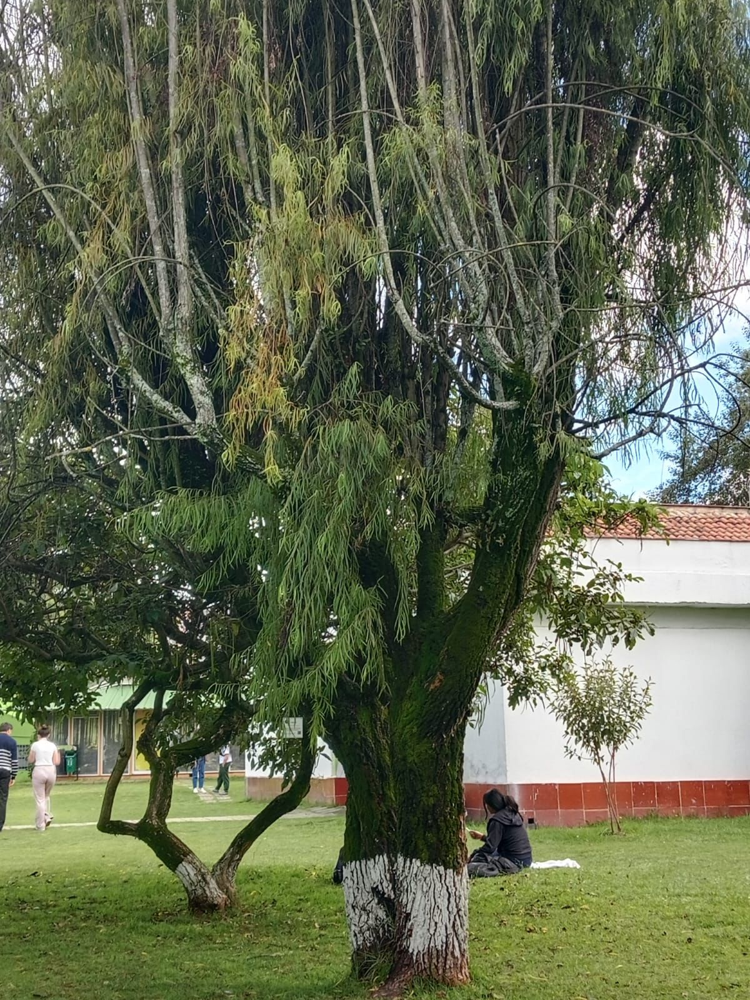

← Volver

Sauce Llorón
Descripción
es un árbol caducifolio (pierde sus hojas en invierno) muy conocido por su forma elegante y ramas colgantes que parecen “llorar”.
Tiene una copa amplia, hojas alargadas y un tronco fuerte con corteza agrietada.
Características
- Altura: 10 - 20 metros.
- Hojas: Estrechas, alargadas, de color verde claro brillante que se vuelven amarillas en otoño.
- Flores: Muy pequeñas, amarillentas, agrupadas en espigas llamadas amentos.
- Fruto: Cápsula pequeña que libera semillas algodonosas.
Usos
- Muy usado en parques, jardines y orillas de ríos por su belleza y sombra fresca.
- La corteza contiene salicina, sustancia base de la aspirina; se usaba tradicionalmente como analgésico y antiinflamatorio natural.
Importancia Ecológica
- Sus ramas y hojas sirven de refugio para aves e insectos.
- Ayuda a proteger riberas y márgenes de ríos por su sistema radicular extenso.
- Contribuye a mejorar la calidad del aire y del paisaje natural.